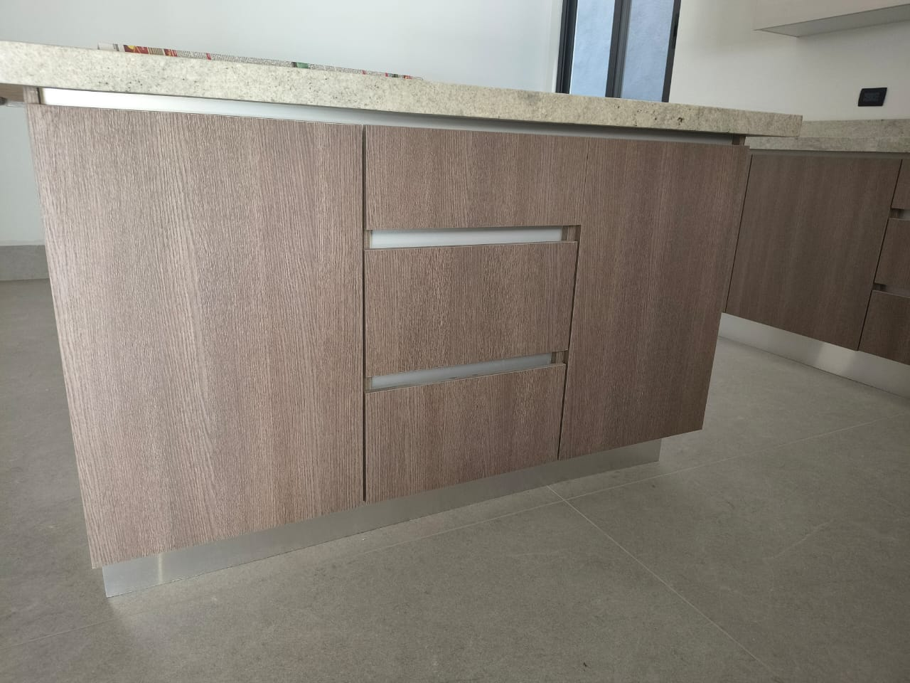
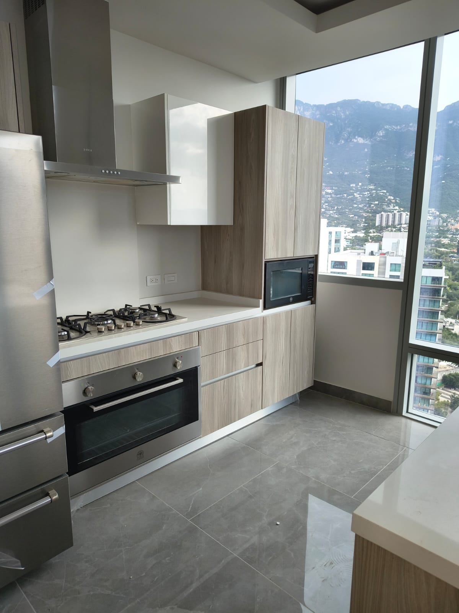
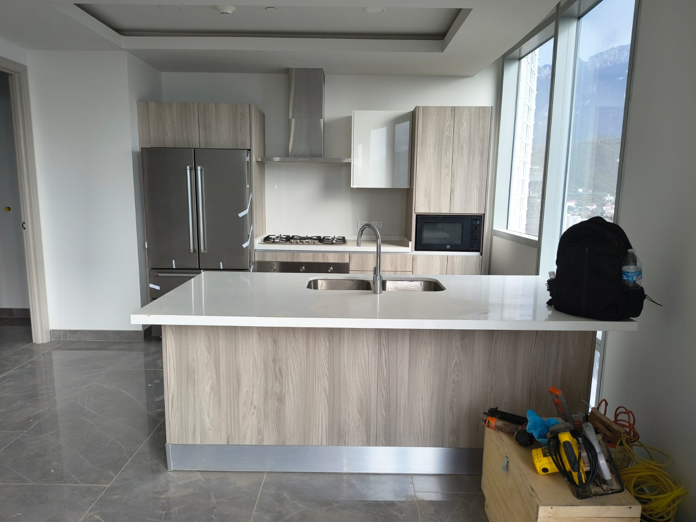
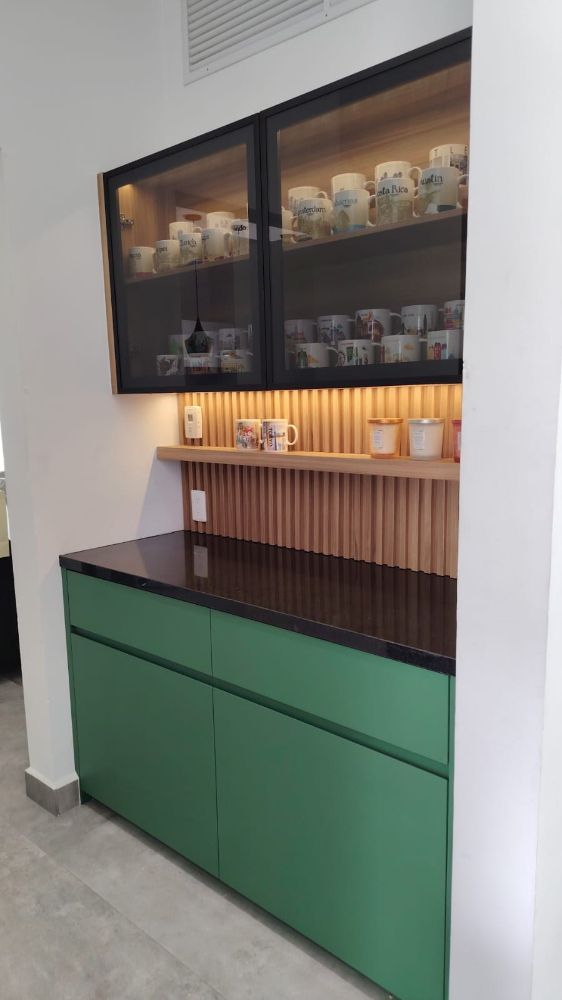
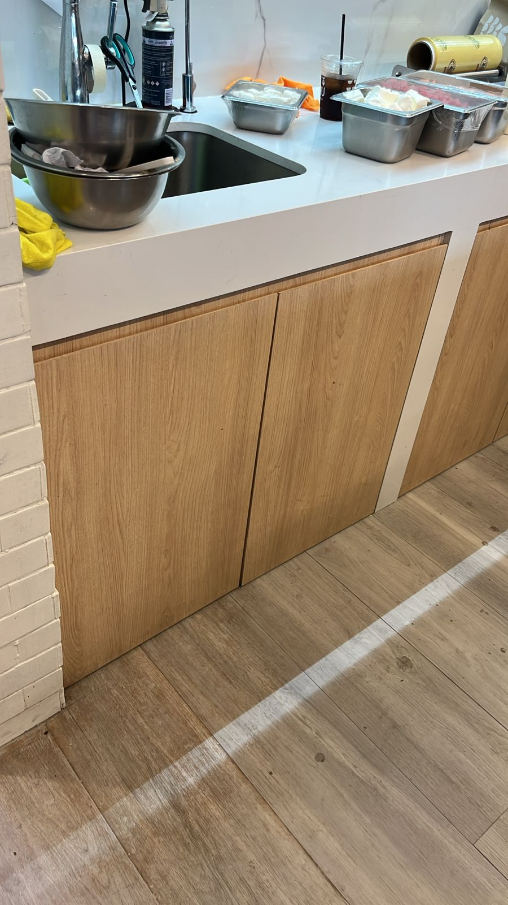

Isla de cocina
Isla con frentes en acabado tipo madera, cajones integrados y diseño limpio para almacenamiento y trabajo diario.
Diseños funcionales y personalizados para aprovechar cada espacio de la cocina.

Isla con frentes en acabado tipo madera, cajones integrados y diseño limpio para almacenamiento y trabajo diario.

Conjunto de módulos en acabado madera clara, con cajones, gabinetes y espacios preparados para electrodomésticos.

Proyecto integral con gabinetes, zona de trabajo e isla central amplia para complementar la distribución de la cocina.

Mueble personalizado con gabinetes verdes, cubierta oscura, detalles en madera y vitrinas superiores para exhibición y almacenaje.

Gabinetes inferiores en acabado tipo madera con frentes lisos, adaptados al espacio de trabajo y al área del fregadero.